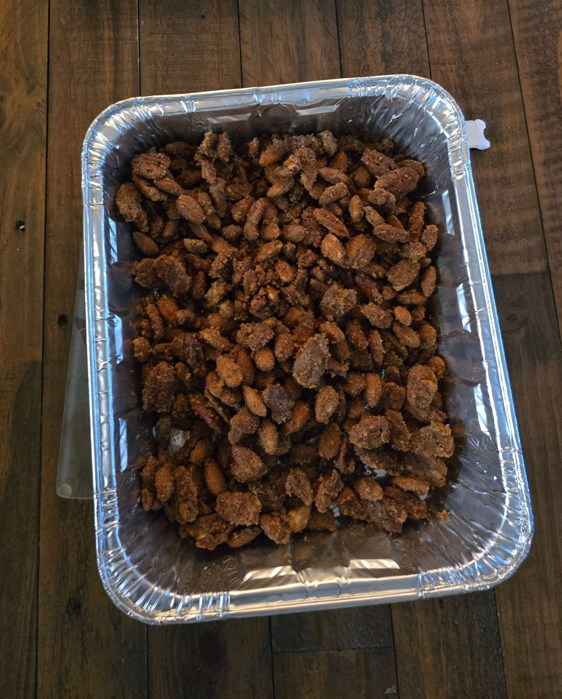

Smoked Cream Cheese
Craving something salty and sweet? Here are my "Smoked Candied Nuts"! Can even some chili powder if you like the heat.
Ingredients
- 1lb Pecans and/or Almonds (or whatever nuts you prefer)
- 1 cup of sugar
- 1 tbsp of ground cinnamon
- 2 tsp of vanilla extract
- 1 egg white
- ½ tsp of salt
- 2 tsp of water ½-1 tsp chili powder (optional for a spicy version)
Instructions
- Prepare smoker to 250°F
- Add favorite wood, chips, or pellets. I use a blend of maple and cherry woods
- Line a 9x13 foil sheet with parchment paper
- Mix the sugar, cinnamon, salt, and chili powder (optional) in a large ziplock bag
- Whish egg white, vanilla extract, and water with a fork in a large bowl. Whisk until frothy
- Add nuts to the egg white mixture and stir until evenly coated
- Now add nuts to the ziplock bag with sugar, cinnamon, salt, and chili powder. Shake until evenly coated
- Spread them out evenly onto the sheet with parchment paper
- Smoke at 250°F for 1 hour, stirring every 15 minutes
- Remove and let cool